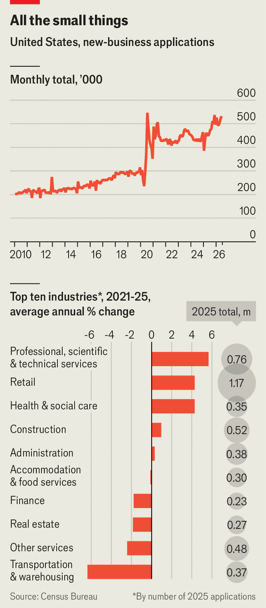

America has become an entrepreneur’s paradise
Etsy-sellers and small-town accountants are enjoying the fruits of AI
Jul 30th 2026
Several years ago, Zachary Dunn was selling cars in a small Georgia town when he realised that he “was sick of making other people rich”. Soon he quit and began hawking hats emblazoned with slogans online with a college roommate. (Recent hits include “DADDY” and “Put it on my husband’s tab”.) Their business, The Mad Hatter Company, is set to make eight figures in sales this year. Mr Dunn says he will never work for someone else again.
He is not alone. Since the beginning of 2024 an average of 466,000 new-business applications have been filed each month in America, according to data from the Census Bureau. This June saw 531,000 applications, nearly double the average monthly figure in 2019 (see chart).

Americans have long loved the idea of being their own boss. (The term itself originates from colonial New Yorkers’ twisting of the Dutch word baas.) For at least two decades around 60% of them have said they would prefer to start their own business than to toil for someone else, according to Gallup, a pollster. Yet until recently fewer and fewer were living out that dream. As large firms lured workers with the promise of stability, the share of self-employed Americans fell from 36% in 1910 to less than 10% in 2020, noted a report from the American Enterprise Institute, a think-tank.
That is now changing. Full-time self-employment rose to its highest level this century in 2025, reaching 16.8m, according to the Small Business & Entrepreneurship Council, a trade group. Business formation first surged during covid-19, as laid-off Americans turned to self-employment. In July 2020 new-business applications hit 547,000, the highest on record. Federal incentives helped: millions of people were able to take advantage of pandemic-era subsidies for small businesses. So too did an explosion in e-commerce and other ways to make money remotely.
As the pandemic faded, existing businesses clamoured for workers and government incentives were wound down. Even so, the number of applications remained elevated, and since around the start of last year has been rising rapidly once again. Buzzy artificial-intelligence startups in Silicon Valley backed by venture capital account for only a small part of the increase. The industries witnessing the biggest flurry of applications are professional services (up by 25% between 2021 and 2025), retail (18%) and health care and social assistance (18%). What is behind America’s latest entrepreneurship boom?
The first explanation is the macroeconomic environment. In recent years American firms have hired and fired relatively few workers. The difficulty of getting a payrolled position may have encouraged jobseekers to start their own businesses, reckons John O’Trakoun, an economist at the Federal Reserve Bank of Richmond. Young people in particular, who are facing a challenging market for entry-level jobs, may find entrepreneurship an attractive alternative. The share of Americans aged 15-34 who say it is a good time to find a job fell from 75% in 2022 to 43% last year, according to Gallup.
The same may be true for workers who relocated during the pandemic and did not want to return to the office. A paper from 2024 by Ryan Decker, an economist for the Federal Reserve Board, and John Haltiwanger of the University of Maryland found a close correlation between the share of people in a location who were quitting their jobs and the number of new-business applications, with a particularly high rate of both in suburbs to which many city-dwelling office workers fled earlier this decade.
Shifting consumption patterns offer a second explanation for the new-business boom. America’s ageing population has made catering to the elderly a roaring trade, with demand for everything from nursing homes to downsizing consultants. Small retailers are also finding it easier to make a living thanks to the uptick in e-commerce from the pandemic and algorithms that have become better at serving relevant products to hobbyists. More than half of sales supported by Shopify, a provider of e-commerce tools, now come from “niche” categories outside the 100 most common; entrepreneurs can mint money selling trading cards and custom pill cases, avoiding crowded categories.
What is more, good ideas are easier than ever to find online, notes Justus Shaw, who started a mobile coffee cart in Tennessee last year. After seeing a coffee shop in Florida post a video of a machine for canning cold brew, he bought one. It is partly why his cart now brings in between $10,000 and $15,000 each month.
The third and perhaps most important explanation relates to AI. Chatbots have made it easier to get a business going by allowing even the tech-shy to build a website and navigate local regulations. The share of founders who used AI to help launch their business doubled to 60% between 2023 and 2025, according to a survey by Gusto, a payroll platform. New cohorts of small businesses are adopting AI earlier and at higher rates, found JPMorgan Chase, a bank. The technology has allowed people who already wanted to strike out on their own to do so much more easily. “It’s like chemical reactions that have an activation potential,” says Miquel Llobet, who launched an AI-powered commercial-insurance broker last year. AI lowers the bar for those reactions to occur.
Politicians on the campaign trail love to speak of small businesses as “job creators”. Yet the share of new-business applications that the Census Bureau deems “high-propensity” (meaning they are likely to employ at least one person other than the founder in the near future) was only 30% last year, down from 38% in 2019. “AI is filling the capability gaps that once made hiring necessary”, ushering in “the age of the solopreneur”, argued a team of economists at Stripe, a payments platform, in a recent blog post.
Kelly Loeffler, head of the Small Business Administration, a government agency, disagrees. She expects that small businesses powered by AI will eventually hire at similar or higher rates to their predecessors. Mr Shaw, the Tennessean coffee entrepreneur, has automated much of his back-office work but has hired five baristas as his business expands into weddings and corporate events. It has been a similar story for Jake Levine, who last year founded a business that helps pharmaceutical companies manage clinical trials. “We always had the intention of scaling,” he says.
Economic and technological shifts have created fertile ground for a nation already enamoured with entrepreneurship, reducing the capital and brain-power it takes to grow a business. Aaron Terrazas, an economist at Gusto, reckons that much of the value generated by AI could end up accruing not to corporate giants, but to Etsy-sellers and small-town accountants. That would reverse a century-long shift toward working for The Man. ■